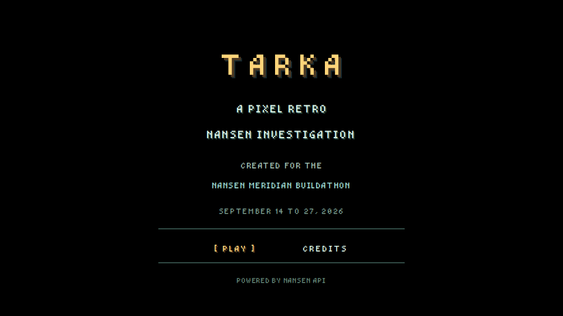
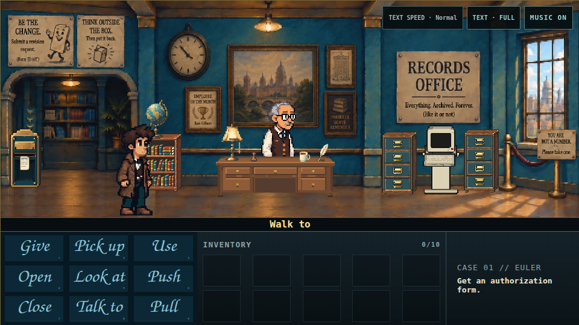

TARKA
A very public blockchain. A very private filing cabinet.
Tarka is a complete pixel-art point-and-click mystery. Play as Rook, endure Arthur the Archivist's paperwork, and turn real historical Nansen-derived Euler evidence into a case you can actually follow.
Play Tarka · Documentation · Release downloads · Creator's note · Request catalog · Creator on GitHub · Creator on X · Buy Me a Coffee
No crypto expertise is required. Curiosity helps. So does reading the form before signing it.
Screenshots


The same complete 16:9 scene is available in fitted mobile full screen: view the mobile presentation.

Explore, experiment, and click the weird combinations
The direct route solves the case, but it is not the whole game. Try different verbs on the scenery, use unlikely inventory combinations, talk to things that clearly cannot answer, and revisit objects as the case changes. A substantial amount of optional dialogue, jokes, callbacks, and inside jokes is hidden in those interactions.
Run locally in under ten minutes
Requirements: Node.js 20.19 or later and npm 10 or later.
git clone https://github.com/th3Wh1t3Rabbit/tarka.git
cd tarka
npm ci
npm run dev
Open the local address printed by Vite. No API key, backend, wallet, external media host, or runtime provider connection is required.
To build and inspect the exact static production form:
npm run release:verify
npm run preview
Controls
- Click the scene to walk.
- Select one of the nine verbs, then select a hotspot.
- For
USEandGIVE, select an inventory item before the hotspot. - Right-click or
Escapecancels the current command. - Click,
Space, orEnterreveals and advances dialogue. - Number keys
1–9select verbs in display order. - On phones, use the visible full-screen icon for immediate fitted playback; the adjacent menu contains text, music, and the exit-full-screen control. Full screen requests landscape when the browser permits it and otherwise letterboxes the complete game in portrait. Outside full screen, swipe horizontally or pinch-zoom the native pixel-art canvas as needed.
See the player guide for the full interaction model.
How Nansen is used
Nansen data is not decorative. Historical Nansen-derived records determine the questions, candidate trails, contradiction, falsifier, and exact proof used by the case. Ordinary browser play uses a reviewed, frozen competition corpus. The shipped game performs zero live provider calls and contains no Nansen credential.
Read Nansen integration and evidence boundaries for the precise runtime and claim boundary.
Production and hosting
- Build command:
npm run build - Output directory:
dist - Required runtime environment variables: none
- Required backend services: none
- Intended hosting: origin root with an
index.htmlSPA fallback
npm run release:verify builds the game, checks the browser boundary, verifies
required runtime assets, confirms public files enter dist byte-for-byte, and
rejects machine-local filesystem dependencies in the generated site.
Documentation
- Documentation index
- Creator's note
- 101-request catalog
- Player guide
- Platforms and browser support
- Architecture
- Production animation assets
- Nansen integration
- Testing and release qualification
- Known limitations
- Credits and third-party notices
- Complete Script Explorer
- Script Explorer coverage proof
License
The first-party software code and technical documentation are available under the MIT License. Tarka's artwork, animation, music, narrative, dialogue, characters, logos, and branding use the separate Tarka Content Terms. See LICENSE.md and the rights manifest for scope.
Created by th3Wh1t3Rabbit for the Nansen Meridian Buildathon.